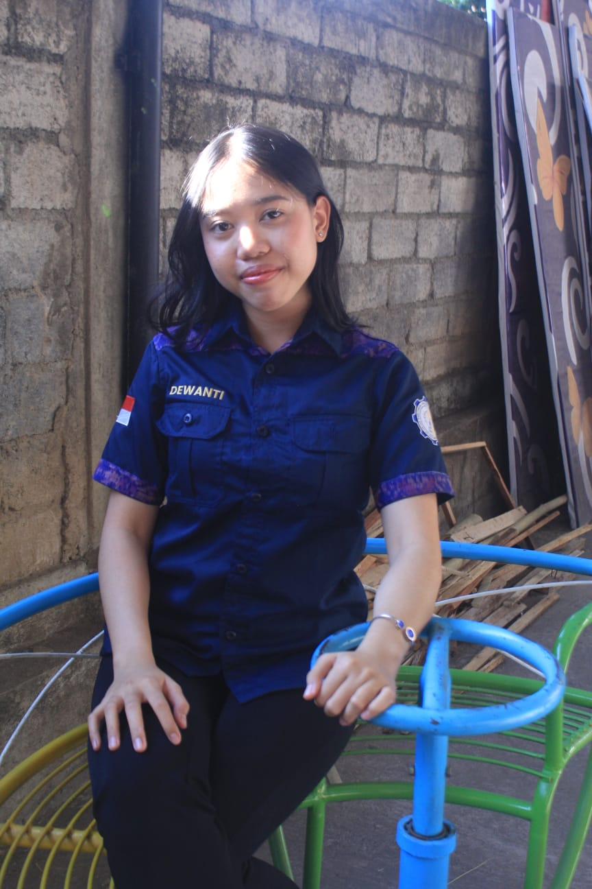

Get to Know Me ♡

Saya adalah mahasiswa Ilmu Komputer di Universitas Pendidikan Ganesha. Saya suka mempelajari bagaimana teknologi bisa digunakan untuk membantu pekerjaan manusia menjadi lebih mudah dan efisien.
Saya tertarik untuk mempelajari berbagai hal yang berhubungan dengan teknologi, terutama web development, database, dan kecerdasan buatan. Saya juga senang mencoba hal-hal baru untuk menambah pengalaman dan pengetahuan.
Saya percaya bahwa dunia teknologi tidak hanya tentang menulis kode, tetapi juga tentang memecahkan masalah dan berinovasi. Itulah alasan saya memilih jurusan ini karena saya ingin menjadi seseorang yang bisa berkontribusi lewat teknologi, baik dalam skala kecil maupun besar.